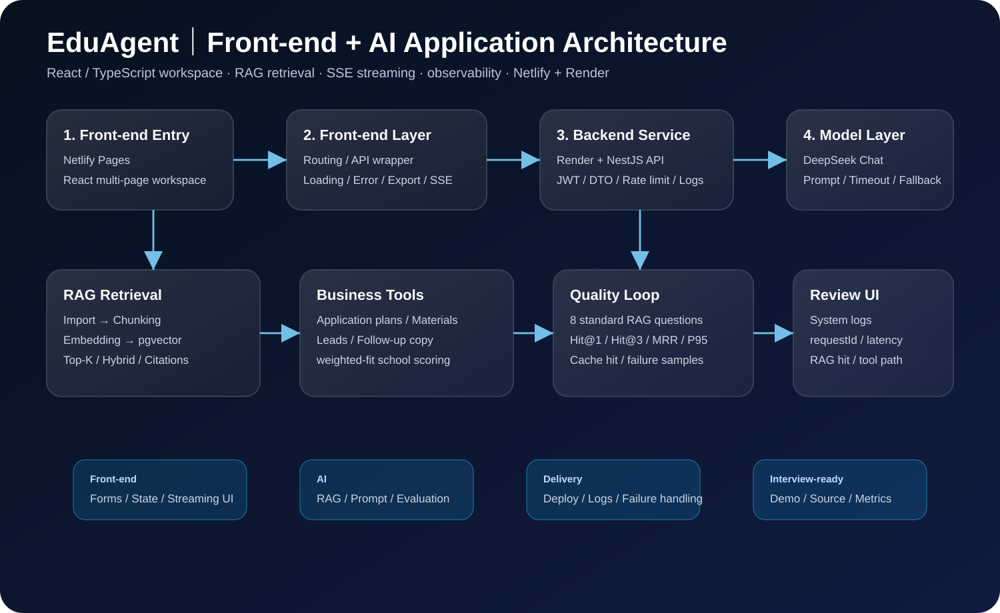

Front-end engineering
React + TypeScript multi-page workspace, complex forms, result panels, local state, error boundary, and responsive UI.
Front-end / AI Application / Full-stack Intern
I focus on React + TypeScript front-end engineering and extend into NestJS / Next.js, RAG retrieval, SSE streaming, and LLM integration. EduAgent covers a business AI workspace, while TokenFence Studio focuses on prompt safety and multi-model orchestration across local-first developer workflows.
Available for internship from July 2026 to December 2026. Focus areas: front-end engineering, AI application development, full-stack integration, and AI tooling.
Profile
Computer Science Undergraduate · Front-end · AI Application · Full-stack
I build front-end experiences that make AI capabilities usable, traceable, and explainable.
React + TypeScript multi-page workspace, complex forms, result panels, local state, error boundary, and responsive UI.
LLM calls, Prompt design, RAG retrieval, SSE streaming, source citations, and long-running request UX.
Chunking, embedding, Top-K recall, keyword + vector hybrid retrieval, weighted-fit scoring, and evaluation metrics.
TokenFence Studio turns prompt safety, model routing, context compression, CLI / MCP, and local archives into a local-first AI workspace.
Built around React + TypeScript, with practical extensions into AI applications, full-stack integration, and developer tooling. The projects emphasize real interaction states, API integration, observability, and deployable delivery.
React + TypeScript multi-page workspace with complex forms, state handling, responsive UI, error boundaries, and export flows.
LLM APIs, RAG retrieval, citations, Prompt Guard, model comparison, streaming, and long-running AI task states.
NestJS / Next.js APIs, JWT, DTO validation, rate limiting, logging, provider registry, local archive, and deployment integration.
TokenFence Studio focuses on pre-send prompt safety, file-level routing, multi-model comparison, CLI entry points, and MCP-ready workflows.
Chengdu Hongqi Education Technology Co., Ltd. · Chengdu
Selected work across an AI workspace, open-source AI tooling, internship systems, and supporting projects, with emphasis on front-end engineering, LLM integration, API collaboration, and deployment.
Key projects include live links or source code for quick review of functionality, interaction states, and engineering implementation.
Personal full-stack project with a front-end workspace, RAG retrieval, AI tools, logs, and evaluation.
Background: study-abroad consulting workflows are scattered across student profiles, school recommendations, writing plans, documents, and follow-ups. EduAgent turns them into one usable workspace.

Open-source project: a pre-LLM safety and routing layer before prompts reach cloud or local models.
TokenFence Studio sits between user input and model calls. Before a prompt is sent, it performs local risk scanning, sensitive-content redaction, context compression suggestions, and model routing, then visualizes the final prompt, risk status, and routing result.
Public workflow version from internship work
Text processing, rule retrieval, and safety boundary project
Supporting Java, Flutter, and native front-end projects showing broader engineering fundamentals.
Skills are grouped by engineering focus: front-end first, with AI application, full-stack integration, and tooling as extensions.
React · TypeScript · JavaScript · HTML5 / CSS3 · component split · routing · complex forms · state management · local cache · responsive layout · mobile UI · SSE rendering · Loading / Empty / Error · Error Boundary · copy / export
LLM API · Prompt · RAG chunking and retrieval · Embedding · pgvector · Top-K recall · citations · retrieval evaluation · Prompt Guard · model comparison · AI latency / hit / error observability
NestJS · Next.js Route / Server Components · REST API · JWT · DTO validation · rate limit · error handling · Provider Registry · CLI · MCP Server · logs
Python text processing · Java OOP · Flutter / Dart basics · SQL · GitHub · Netlify · Render · GitHub Pages · README / Changelog · project presentation
Bachelor of Computer Science
Campus: Technology Park Malaysia, Bukit Jalil, Kuala Lumpur. Internship period: July 2026 - December 2026.
Asia Pacific University of Technology & Innovation is located in Kuala Lumpur, Malaysia.
Focus areas: Front-end Development, AI Application Development, LLM Application Front-end, Full-stack Integration, and AI Tooling.